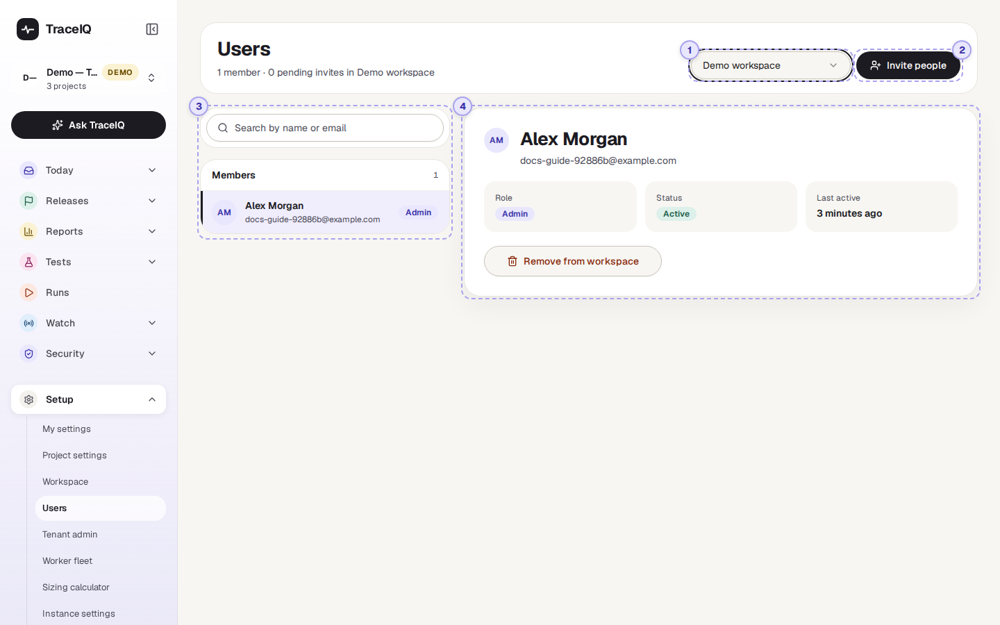
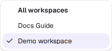
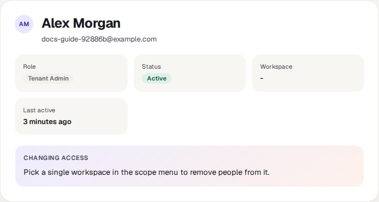
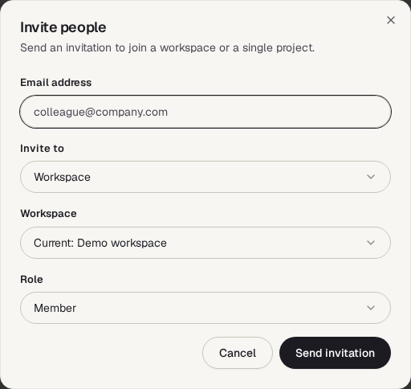
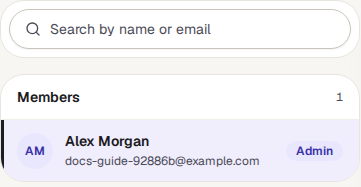
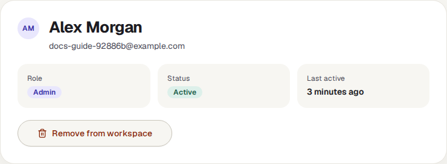

Users
The list of people in a workspace: their role, whether they are active, and when they last signed in. Workspace admins also invite new people here, to the whole workspace or to a single project, and remove people who should no longer have access.
What it is for
Users answers "Who has access, and how do I add or remove someone?" A workspace is the space your team's projects live in; to work on a project, a person must first be a member of its workspace. The Workspace page does the same for teams and for access to each project; this page is about the people themselves.
Workspace admins
Bring a new colleague in, and take someone out when they leave the team.
Tenant admins
See everyone in the organisation at once, across all its workspaces.
Everyone else
Look up who else is in the workspace and who its admins are.
Where to find it: in the sidebar, open Setup → Users.
A tour of the screen
The numbers on the screenshot match the sections below.

The line under the heading counts what is shown, for example "1 member · 0 pending invites in Demo workspace".
Whose people

The menu chooses the workspace whose people are listed. If you are a tenant admin (an administrator of the whole organisation, see Tenant admin), it has one more choice, All workspaces, and starts there. Everyone else starts on their first workspace.
All workspaces lists each person in the organisation once, with their highest role anywhere in it (for example Tenant Admin). It doesn't list pending invitations, and to remove someone you first pick a single workspace. Its Workspace box shows only a dash in this version.

Invite people

Only shown to people who may manage the workspace's members (workspace admins and tenant admins). The dialog asks:
- Email address of the person.
- Invite to: the whole Workspace, or one Project (then pick the project).
- Workspace: the one you are looking at, another of yours, or Create a new workspace (only tenant admins may create one).
- Role: for a workspace, Member or Admin; for a project, Project Admin, Editor or Viewer.
| Role | What it allows |
|---|---|
| Workspace Admin | Everything in the workspace: every project, its people, teams and settings. |
| Workspace Member | Belongs to the workspace, but sees only the projects they are given access to, directly or through a team. |
| Project Viewer | Can look at the project's tests and results. |
| Editor | Can also create, change and run tests. |
| Project Admin | Can also manage the project's members, settings, and delete things. |
- If the person already has a TraceIQ account with that email, they are added straight away. Nothing to accept.
- If not, TraceIQ keeps a pending invitation, listed under Pending invites. In this version no email is sent, so tell them yourself. When they sign up with exactly that address, they join with the role you chose.
- A project admin who is not a workspace admin can only invite people who are already in the workspace.
The list

Type in the search box to find someone by name or email. The list has up to two groups:
- Members: each person, with their email and their role in this workspace on the right. Admin roles have a lavender label.
- Pending invites: invitations for addresses that have no account yet, marked Pending. They can't be withdrawn on this page yet.
The selected person

Click someone in the list to see them here: their role, their status, and Last active, which is when they last signed in ("Never" if they haven't yet).
Remove from workspace (admins only) takes the person out of the workspace and out of all its teams, after you confirm. Their account itself is kept, and so is everything they created.
Removing someone does not take away access that was given to them directly on a project. After removing a person, open Workspace → Projects and remove them from Direct members of each project as well.
Watch it in use
How to…
…give a new colleague access to one project
- Ask them to sign up to TraceIQ with their work email (or do the next steps first; they join when they sign up).
- Pick the workspace in the menu, then press Invite people.
- Type their email, set Invite to to Project, and choose the project.
- Choose Viewer, Editor or Project Admin, and press Send invitation.
…remove someone who has left
- Pick the workspace in the menu and find the person with the search box.
- Press Remove from workspace and confirm.
- Open Workspace → Projects and remove them from each project's Direct members.
- If they had API keys, those keep working until the account is deactivated or the keys are revoked: revoke them on API keys.
…find out who the admins are
- Pick the workspace.
- Look for the lavender Admin labels on the right of the list.
Good to know
- Who you see depends on who you are. Workspace and tenant admins see every member, the pending invitations, Invite people and Remove from workspace. Other members see only the people who have been given access to the same projects as them, one by one (access through a team doesn't count here), and nothing to change.
- Removing is immediate and can't be undone, but you can invite the person again; an existing account is added straight back.
- Inviting someone who is already a member changes nothing, not even their role. There is no button to change a workspace role in this version: remove the person and invite them again with the new role.
- Pending invitations don't expire for people who sign up with the invited address, whenever they do.
- With single sign-on, people may be added to the workspace automatically when they first sign in, depending on how your instance admin set it up.
Related pages
Tenant admin
The next page in this guide: everyone in the organisation, and adding a person to several workspaces at once.
Workspace
Teams, and who may use each project, as viewer, editor or admin.
Access reviews
Regular checks that everyone still needs the access they have.
API keys
Keys made by a person keep working until revoked or until that person is deactivated.